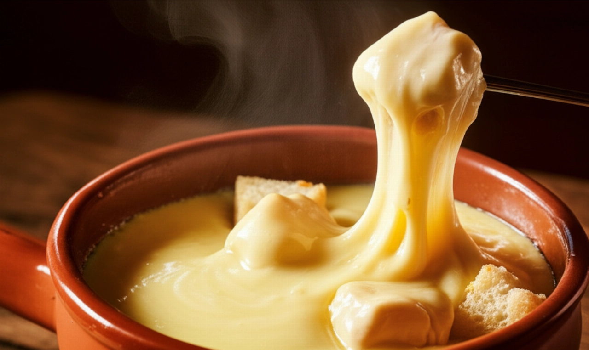
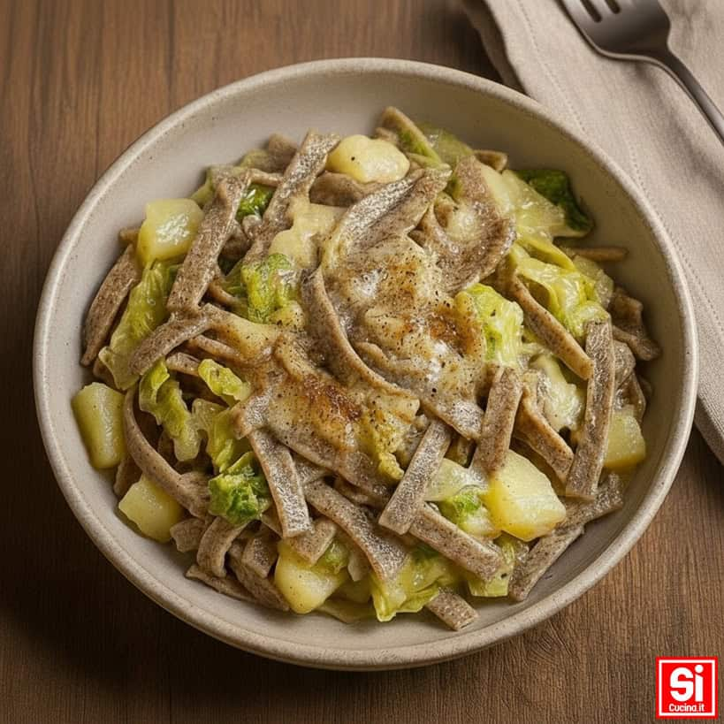
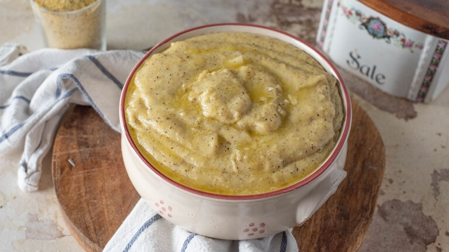
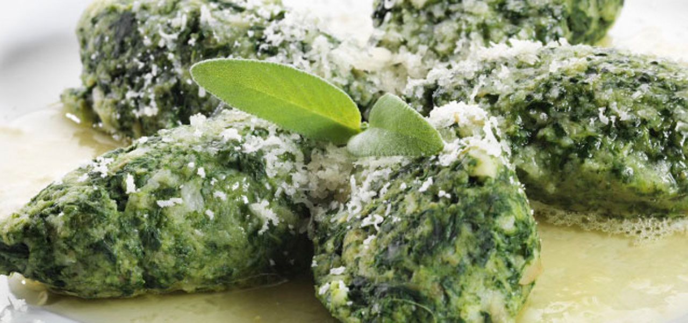

Agnello alla Scottadito
Piatto tipico del Lazio.

Canederli in Brodo
Ricetta tipica del Trentino-Alto Adige.

Fonduta Valdostana
Piatto tipico della Valle D'Aosta.

Pizzoccheri
Ricetta tipica della Valtellina.

Polenta Taragna
Piatto tipico valtellinese.

Strangolapreti
Ricetta tipica del Trentino-Alto Adige.